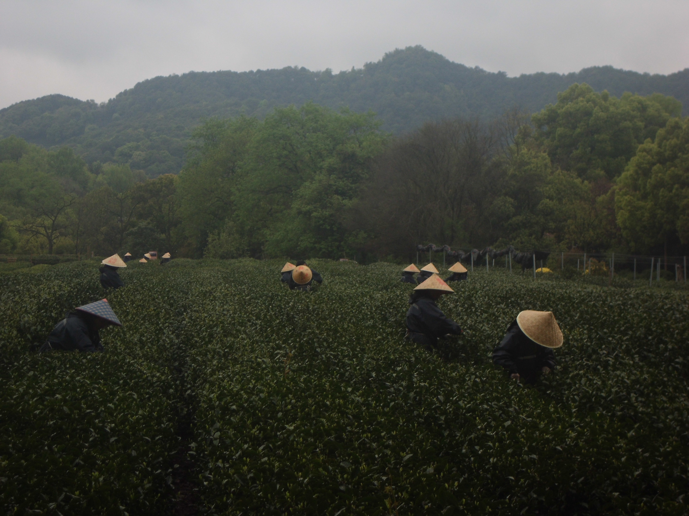
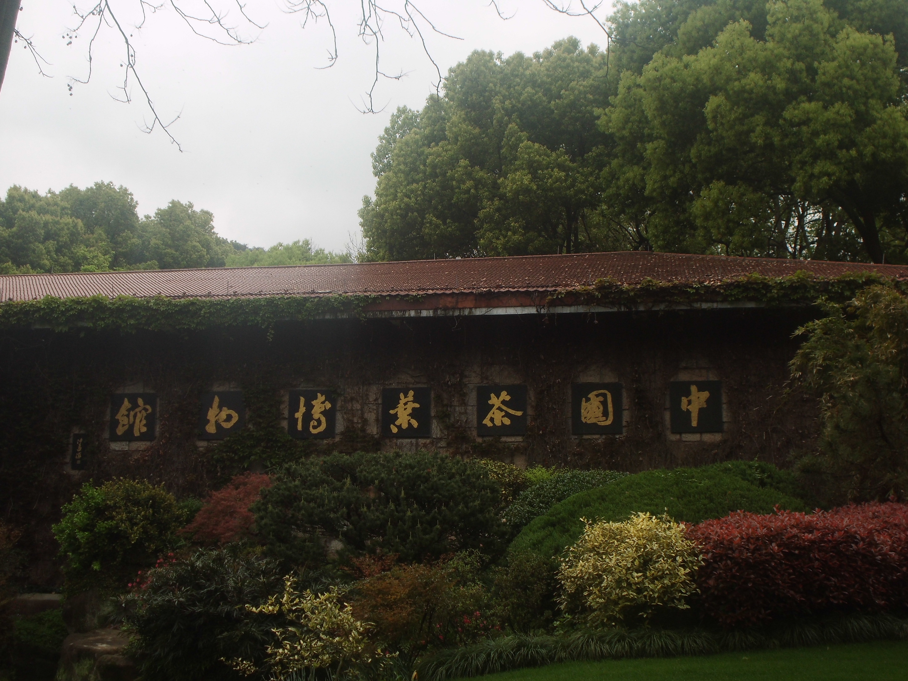

9：15 茶文化博物館（瞎轉了一圈，館沒怎麼轉，反而拍了好多照片）。

採茶人

門牌
一進門就是個茶字


清明時節雨紛紛
10：50 梅家塢村體驗點茶文化（少攰，詳情請看片）還挺好玩。


12：30 Lunch Time。
15：30 京杭大運河博物館（在車上睡了好久...😪），在里面轉了一圈就去運河上的拱宸橋（2022亞運會吉祥物之一）耍了。

16：30 拱宸橋及兩端古街，兩端風景如詩如畫，將江南風景的優美展現得淋漓盡致。


17：30 小河直街，非常有煙火氣息，不過也是人山人海😶🌫️。


最後 轉眼已是最後一晚，就再吃點燒烤吧。終於把Titanic看完了🥳。